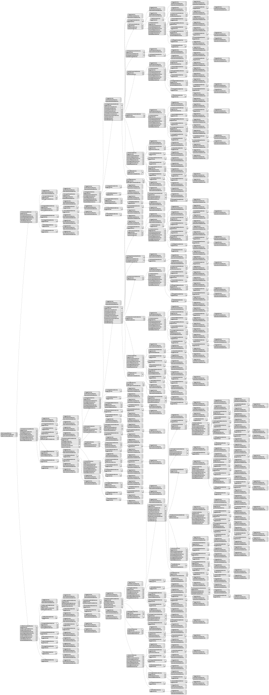

Overview:
Backtest-kit is a production-ready TypeScript framework for backtesting and live trading strategies with crash-safe state persistence, signal validation, and memory-optimized architecture. The framework follows clean architecture principles with dependency injection, separation of concerns, and type-safe discriminated unions.
Core Concepts:
Architecture Layers:
Key Design Patterns:
Data Flow (Backtest):
Data Flow (Live):
Event System:
Performance Optimizations:
Use Cases:
Test Coverage:
The framework includes comprehensive unit tests using worker-testbed (tape-based testing):
All tests follow consistent patterns:
The writeMemory function lets you store data – like trade decisions or important observations – in a special memory space associated with a particular trading signal. Think of it as creating labeled notes for a specific signal.
It takes a small object as input that includes the name of the memory "bucket," a unique ID for the memory entry itself, the actual data you want to store (which can be any kind of object), and a description to help you remember what the data represents.
The function will automatically figure out if you're in a backtesting simulation or live trading environment. It relies on the execution context to know which signal to attach the memory to; if no signal is active, it won't save the data and will let you know it couldn't proceed.
The warmCandles function helps prepare your backtesting environment by pre-loading historical candlestick data. It fetches candles within a specified date range and saves them for quicker access during backtests. This is particularly useful for large datasets or when dealing with multiple intervals, as it avoids repeatedly downloading the same data. You provide parameters defining the start and end dates for the data you want to cache.
This function, validate, helps you make sure everything is set up correctly before you run a backtest or optimization. It checks if all the entities you're using—like exchanges, trading strategies, and risk management systems—actually exist in the system's registry.
You can tell it to check specific entities or, if you leave it alone, it will check everything.
Think of it as a quick sanity check to catch any configuration errors early on, saving you time and frustration later. It remembers previous checks to be efficient too.
This function allows you to pause a trading strategy's signal generation.
It essentially tells the strategy to stop creating new buy or sell signals. Any existing signal that's already active will finish its cycle as planned.
Whether you’re running a backtest or a live trading session, the system will gracefully halt operations at a point where it's safe to do so, like when it's idle or a signal has closed. You provide the trading pair symbol to specify which strategy to stop.
This function lets you safely end a backtest run. It triggers a signal that lets all parts of your backtest – like data handlers or strategy logic – clean up and finish their work before the program stops. Think of it as a polite way to say "goodbye" to your backtest, ensuring no data gets lost or processes get stuck. It's especially useful when you need to stop the backtest abruptly, like when you press Ctrl+C.
You can now control how the backtest-kit framework reports information. This function lets you provide your own logging mechanism, allowing you to direct messages to a file, a console, or any other logging system you prefer. The framework will automatically add helpful details to these log messages, such as the strategy name, the exchange being used, and the trading symbol, making it easier to understand what's happening during backtesting. Simply give the framework an object that handles logging – one that follows the ILogger interface – and it will use that for all its internal reporting.
This function lets you adjust the overall settings for the backtest-kit framework. You can tweak things like the data handling or how strategies are executed by providing a new configuration object. Think of it as customizing the framework’s behavior.
The config object allows you to selectively change only the settings you need to adjust; you don't have to provide the entire configuration.
There's also an _unsafe option. This is primarily for testing environments where you might need to bypass certain validation checks, but use it with caution as it could lead to unexpected behavior if misconfigured.
This function lets you customize the columns that appear in your backtest reports, giving you more control over the information presented. You can adjust the default column definitions to highlight the data most important to you, effectively tailoring the reports to your specific needs. The function ensures that any changes you make are structurally sound, but a special flag allows skipping these validations when needed, for example, in testing environments. Basically, it's a way to fine-tune the reporting to showcase exactly what you want to see.
The searchMemory function lets you find relevant memory entries related to a particular signal. It uses a sophisticated search technique called BM25 to rank results based on how well they match your query.
The function automatically pulls the necessary information—like the symbol and signal ID—from the trading environment it's running in.
If there’s no active signal to search against, it will let you know with a warning but still proceed, returning nothing.
You provide a simple object containing the bucket name (where your memory is stored) and the search query itself.
The result is a list of memory entries, each with a unique ID, a score representing how closely it matches your search, and the content of the memory entry itself. This allows you to prioritize and work with the most relevant results.
This function helps clean up your backtesting environment by deleting old memory entries.
It specifically targets memory associated with a particular signal, identified by its ID.
The function intelligently figures out whether it's running in a backtest or live environment without you needing to specify.
If there's no pending signal to work with, it will let you know with a warning and won't proceed with the memory removal.
To use it, you’ll need to provide the name of the bucket where the memory is stored and the unique ID of the memory entry to remove.
This function lets you retrieve data stored in memory associated with a specific trading signal. Think of it as accessing a record of past events or settings tied to a particular trade.
It figures out whether you're in a backtesting or live trading environment.
To use it, you'll provide the bucket name and a unique identifier for the memory you want to read. If no signal is active, it will notify you with a message and won't return anything. It uses the execution context and the active pending signal to locate the memory.
This function lets you tweak an existing strategy's walker configuration, which is important for comparing different strategies fairly. Think of it as a way to adjust the rules used for evaluating strategies without completely rebuilding them. You only need to specify the changes you want to make; the rest of the original walker configuration stays the same. It returns a promise that resolves to the updated walker configuration.
This function lets you modify a trading strategy that's already set up within the backtest-kit framework. Think of it as a way to tweak an existing strategy—you don’t have to recreate it entirely.
You provide a new configuration, and this function will merge those changes with the strategy's current settings. Only the parts of the strategy you specify will be updated; everything else stays the same. It's useful for making small adjustments or refinements to a strategy without a complete overhaul.
This function lets you tweak an existing position sizing configuration. Think of it as a way to fine-tune how much capital is allocated to trades.
You don't replace the entire sizing schema, but instead provide a partial update—just the settings you want to change. The rest of the original configuration stays the same. It's useful when you need to adjust specific aspects of sizing without starting from scratch.
This function lets you tweak existing risk management settings within the backtest-kit framework. Think of it as a way to fine-tune, not completely replace, a risk configuration that’s already been set up. You only need to specify the parts of the risk schema you want to change; everything else stays the same. This is useful for adjustments without needing to redefine the entire risk profile.
This function lets you tweak the settings for a specific timeframe you're using in your backtest. Think of it as making small adjustments to how data is organized for a particular timeframe, like changing the frequency of data points.
It doesn't replace the entire timeframe setup; instead, it only updates the parts you specify. Any settings you don't provide will remain as they were originally defined. This is useful for fine-tuning your backtesting environment without needing to redefine everything from scratch. You provide a partial configuration object, and it returns the updated frame schema.
This function lets you modify how the backtest-kit framework interacts with a particular exchange. Think of it as a way to tweak an existing exchange's settings, like its data format or connection details, without completely rebuilding it from scratch.
You provide a piece of the exchange configuration – only the parts you want to change – and the function will update the existing exchange schema. Anything you don't specify will stay as it was originally defined. This is useful for adapting to changes in exchange data or for custom configurations.
This function lets you tweak an existing action handler's settings without having to completely replace it. Think of it as making targeted adjustments – you can update specific parts of the handler's configuration, leaving everything else untouched.
It’s handy for things like changing how events are handled in different environments (like development versus production), or swapping out the code that runs when an action is triggered. This allows you to adjust behavior without needing to rework your overall trading strategy. You simply provide a partial configuration, and the function updates the handler accordingly.
This function lets you track the progress of your backtest as each strategy finishes running. It's like setting up a listener that gets notified after every strategy completes within the backtest process.
The notifications, or progress events, are delivered in the order they happen, and the function handles them one at a time to avoid any issues with multiple things happening at once. You provide a function that will be called with each event, allowing you to react to the completion of each strategy. This subscription can be canceled by returning the value it returns.
This function lets you set up a temporary listener for events from a walker. You provide a filter – a rule to decide which events you're interested in – and a callback function that will run only once when a matching event comes through. Once that single event is processed, the listener automatically stops listening. It’s really handy if you need to wait for a specific condition to occur during a walker’s progress and react to it just once.
The filterFn determines which events trigger your callback. The fn is the function that gets executed with the details of that single matching event. The function returns a function to manually unsubscribe.
This function lets you listen for when a backtest run finishes.
It's useful for knowing when all your strategies have been tested.
When the run is complete, a special event is sent to your provided callback function.
Importantly, the events are handled one at a time, even if your callback uses asynchronous operations, ensuring that the order of events is preserved and preventing multiple callbacks from running simultaneously. This function returns a function you can call to unsubscribe from these completion events.
The listenWalker function lets you monitor the progress of your trading strategies as they run within a backtest. It's like setting up a notification system that tells you when each strategy finishes its calculations.
This function sends updates one after another, ensuring that your code handling those updates doesn't accidentally run multiple strategies at the same time.
You provide a function (fn) that will be called for each strategy's completion, and listenWalker will handle the rest, keeping things organized and preventing unexpected issues. This allows you to track the execution of your strategies and perform actions based on their results.
This function lets you keep an eye on any problems that pop up during the risk validation process – that’s when your trading signals are being checked for potential issues.
It provides a way to receive notifications whenever a risk validation function encounters an error.
Think of it as setting up a listener to catch those errors as they happen.
The errors are handled one at a time, even if your error handling function takes some time to complete, which helps prevent unexpected behavior. To stop listening, the function returns another function which you can call.
listenSyncOnce lets you hook into specific trading signals, but it only runs your code once for each matching signal. This is really handy when you need to quickly make adjustments or synchronize with other systems—for example, to make sure an order is fully processed before something else happens.
It works by providing a filter function (filterFn) which determines which signals trigger your callback. When a matching signal arrives, your callback function (fn) will execute.
If your callback involves asynchronous operations (like promises), the backtest framework will pause signal processing until your callback finishes, ensuring everything happens in the right order. There's a warning flag (warned) for potentially advanced use cases. You receive a function that you can call to unsubscribe from the signal.
This function lets you hook into events that happen when signals are being synchronized, like when a trade is about to be opened or closed, but it’s handled in a way that ensures things stay in order. It’s designed to help you keep your trading system in sync with other systems that might be involved.
Essentially, you provide a function (fn) that will be called whenever a synchronization event occurs. If your function takes a little time to finish, like if it's making a network request, the trading process will pause until your function is done.
This is great for situations where you need to confirm something or update information in another system before the trade actually happens. The warned parameter offers additional configuration options, but is currently unpopulated.
This function lets you react to specific changes happening with your trading strategies, but only once. You provide a filter to identify the exact type of strategy change you're interested in, and a function to execute when that change happens. After the function runs once, it automatically stops listening, which is handy for things like waiting for a strategy to be initialized or updated. It's a clean way to respond to a single event and then move on.
This function lets you keep an eye on what's happening with your trading strategy – specifically, changes to things like stop-loss and take-profit levels, and when signals are cancelled or closed. It gives you a heads-up when actions like adjusting a trailing stop-loss, moving a stop to breakeven, or closing a position at a profit or loss level occur.
Crucially, any actions you take in response to these events will be processed one at a time, making sure everything happens in a controlled order. You provide a function that gets called when these events happen, and the function you provide will be executed in a safe, sequential way.
This function lets you react to specific trading signals just once. You tell it what kind of signal you’re looking for – for example, a certain price level being reached – and it will notify your code only when that signal happens. After that one notification, it automatically stops listening, so you don't have to worry about cleaning things up. This is helpful when you need to trigger an action based on a particular event happening just one time.
It takes two pieces of information: a filter that determines which signals you want to watch and a function that will be executed when the matching signal arrives. Once that signal appears and the callback runs, the subscription is automatically cancelled.
The listenSignalLiveOnce function lets you tap into live trading signals, but only for a single event. It's like setting up a temporary alert that fires just once when a specific condition is met. You tell it what condition to look for (using the filterFn) and what action to take (the fn callback). Once that one event triggers the callback, the alert disappears – you don't have to manually unsubscribe. This is helpful for quick checks or one-off reactions to live market data during backtesting.
The function returns another function, which you can use to stop listening to signals early if needed.
The listenSignalLive function lets you hook into real-time trading signals generated during a live backtest. Think of it as subscribing to a stream of updates from your trading strategy as it’s running.
It takes a function that will be called whenever a new signal event occurs. This function receives an object containing details about that signal.
Importantly, this only works with signals created by Live.run().
The events are handled one after another, so you’re guaranteed to receive them in the order they happened. This function also returns a function that you can call to unsubscribe from the signal stream.
This function lets you temporarily listen for specific signals generated during a backtest run. Think of it as setting up a one-time alert for when a certain condition happens during the simulation.
You provide a filter – a rule to determine which events you're interested in – and a function to execute when that rule is met. Once the function runs, it automatically stops listening, ensuring it only triggers once. It's a clean way to react to specific events during a backtest without lingering subscriptions.
The listenSignalBacktest function lets you tap into the flow of events during a backtest. Think of it as setting up a listener that gets notified whenever a signal is generated during a backtest run. You provide a function that will be called each time a signal appears, and that function will receive information about the signal itself. Importantly, these events are processed one at a time, guaranteeing they arrive in the order they occurred. This function is specifically designed to work with events that come from a Backtest.run() execution. It gives you a way to react to what’s happening during the backtest process.
It returns a function that can be called to unsubscribe from the listener.
This function lets you listen for updates from your trading strategy, like when a position is opened, closed, or actively trading. It ensures these updates are handled one at a time, even if your handling function takes some time to complete, preventing any conflicts. You provide a function that will be called whenever a signal event happens, and this function will receive data about the event, such as the current state of your strategy. The function returns another function you can call to unsubscribe from these updates.
This function lets you set up a temporary listener for ping events, focusing on only the events that meet a specific criteria. It's like saying, "Hey, I only care about these particular ping events, and I need them handled just once." Once it finds an event that matches your requirements, it runs your provided function to deal with it and then silently stops listening. This is helpful when you need to react to a single, specific situation triggered by these ping events.
You give it two things: a filter to identify the events you’re interested in, and a function to execute when the right event is found. The function takes care of subscribing and unsubscribing, so you don’t have to manage that yourself.
This function lets you listen for periodic "ping" signals that are sent while a scheduled signal is being monitored, essentially while it's waiting to become active. Think of it as a way to get regular updates on the status of a scheduled signal.
You provide a function that will be called every minute with information about these ping events. This allows you to build custom monitoring or tracking logic around a scheduled signal's lifecycle. It's useful for ensuring things are proceeding as expected during the waiting period.
This function lets you react to specific risk rejection events, but only once. It's like setting up a temporary alert for a particular condition.
You provide a filter that defines what events you’re interested in, and a callback function that will run when that event occurs. Once the event is handled, the subscription automatically ends, so you don’t have to worry about cleaning up. It’s perfect for situations where you need to respond to a certain risk event just one time and then move on.
This function allows you to be notified whenever a trading signal is blocked because it violates a risk rule.
Think of it as a way to react only when something goes wrong with your risk management.
You'll only receive notifications for rejected signals, not for those that pass, ensuring you aren’t overwhelmed with unnecessary updates. The system guarantees that these notifications are handled one at a time, in the order they arrive, even if your callback function needs to do some asynchronous work. To stop listening for these risk rejection events, simply call the function returned by listenRisk.
The listenPerformance function lets you monitor how your trading strategies are performing in terms of speed and efficiency. It provides a way to receive updates about the time it takes to complete different actions during the backtesting process.
Think of it as a way to profile your strategy, helping you pinpoint areas that might be slowing it down. These performance updates are delivered in a specific order, even if the callback function you provide takes some time to process.
To ensure smooth operation, the function uses a queue to handle these updates, preventing multiple callbacks from running simultaneously. You give it a function, and it will call that function whenever a performance event occurs. When you’re done listening, the function returns another function to unsubscribe.
This function allows you to react to specific profit milestones reached during a backtest, but only once. You provide a filter that defines what conditions you're looking for, and a function to execute when that condition is met. Once the condition is triggered and the function runs, the listener automatically stops, so you won't receive any further notifications. It's a handy way to react to a particular profit target being hit and then move on.
This function lets you be notified whenever your backtest reaches a specific profit milestone, like 10%, 20%, or 30% gain. It's useful for tracking progress and triggering actions based on those milestones. Importantly, the events are handled one at a time, even if your code to handle them takes some time to run, ensuring things don’t get messy. You provide a function that will be called with details about the partial profit event when it happens. The function returns a function that allows you to unsubscribe from these events later.
This function lets you set up a listener that will trigger a specific action only once when a particular condition related to partial loss levels is met. Think of it as a temporary alert – it waits for a specific event to happen, then runs your code and stops listening. You define what constitutes that specific event with a filter function. The callback function you provide will be executed just the one time when the filter matches. It’s handy for reacting to unusual or critical loss situations without having to manage ongoing subscriptions.
This function lets you keep track of how much your trading strategy has lost, reporting progress at key milestones like 10%, 20%, and 30% losses. It ensures that these updates are delivered one at a time, even if the code you provide to handle them takes some time to run. Essentially, it's a way to be notified of loss levels and makes sure the notifications happen in a controlled, sequential order. You provide a function that will be called each time a loss milestone is reached, and this function will receive details about the current partial loss. The function returns another function that you can call to unsubscribe from these updates.
This function lets you set up a temporary listener that reacts to the highest profit events, but only once. You provide a rule – a filter – to define which events you're interested in. Once an event matching that rule appears, the provided callback function will run, and then the listener automatically stops listening. It’s handy when you need to wait for a particular profit condition to happen and then take action, but don't want to keep listening afterward.
Essentially, it's a way to say "Hey, let me know when this happens, and then forget about it."
The filterFn determines which events trigger the callback, and the fn is what actually gets executed when a matching event occurs.
This function lets you listen for when a trading strategy achieves a new, highest profit level. It’s like setting up an alert that triggers whenever a strategy does exceptionally well.
The events are handled in the order they happen, even if your callback function takes some time to complete.
To avoid any issues, the callback function is processed one at a time, in a queue.
This is particularly handy if you want to keep track of a strategy’s best performance or dynamically adjust your trading strategy based on milestones.
You provide a function (fn) that will be called with information about the new highest profit whenever it occurs. The function you provide will be returned when you unsubscribe.
The listenExit function allows you to be notified when a backtest or live trading process encounters a fatal error and is stopping. These are serious errors that aren’t recoverable and will halt the process.
It's similar to listening for errors, but specifically designed for situations where the process is ending unexpectedly.
The callback you provide will be executed sequentially, even if it involves asynchronous operations, ensuring errors are handled in the order they occurred. A special wrapper ensures only one error handler runs at a time, preventing potential conflicts.
The listenError function lets you set up a listener to catch errors that happen during your trading strategy's run, but aren't critical enough to stop everything. Think of it as a safety net for hiccups like temporary API connection problems. When such an error occurs, the provided callback function will be triggered to handle it. Importantly, these errors won't crash your backtest; the strategy will keep running. The errors are processed one at a time, ensuring a controlled response even if the error handling logic is complex.
This function lets you react to when a background task finishes, but only once. You provide a filter to specify which completed tasks you're interested in, and then a function that will run when a matching task is done. The system takes care of automatically stopping the listening after the first match, so you don't have to worry about cleanup. Think of it as a simple way to be notified about a specific background job finishing, and then forgetting about it.
This function lets you monitor when background tasks within a trading strategy have finished running. It’s useful if you need to know when a specific process is complete before moving on to the next step.
Essentially, you provide a function (fn) that will be called whenever a background task finishes.
The important thing to remember is that these completion events are handled in the order they occur and your provided function will be executed sequentially, even if it's an asynchronous operation. This prevents unexpected issues from running things out of order or concurrently.
To stop listening for these events, the function returns another function that you can call to unsubscribe.
listenDoneLiveOnce lets you react to when a background task finishes, but only once. You provide a filter – a way to specify which tasks you're interested in – and a function that will run when a matching task completes. The function will execute just one time and then automatically stop listening, so you don't have to worry about unsubscribing. This is great for actions you only need to perform once per background process.
This function lets you monitor when background tasks started with Live.background() finish running.
It provides a way to be notified as these tasks complete, ensuring events are handled one after another, even if your processing involves asynchronous operations.
Think of it as setting up a listener that gets triggered when a background job is done, and it makes sure things happen in the right order. You provide a function (fn) which will be called with details about the completed task each time one finishes. The function you provide will return another function which you can call to unsubscribe from these notifications.
This function lets you react to when a background backtest finishes, but only once. You provide a filter—a way to specify which backtest completions you're interested in—and a function to run when a matching backtest is done. The function will automatically unsubscribe after the callback is executed, so you don't have to worry about cleaning up. Think of it as setting up a temporary listener for a specific backtest result.
This function lets you be notified when a backtest finishes running in the background. It’s like setting up a listener that gets triggered when the backtest is done.
The listener will handle events in the order they happen, even if the function you provide takes some time to complete. To keep things stable, the completion events are processed one at a time.
You provide a function (fn) that will be called when the backtest is finished; this function receives information about the completed backtest as its argument. The function you provide returns another function that you can use to unsubscribe from these completion events.
This function lets you set up a listener that reacts to changes in breakeven protection, but only once. You provide a filter to specify exactly what kind of change you're interested in, and a function that will be executed when that change occurs. Once the function runs, the listener automatically stops, so you don't have to worry about cleaning it up. Think of it as a way to react to a specific, one-time breakeven condition.
This function lets you monitor when a trade's stop-loss automatically adjusts to the entry price – essentially, when the profit covers the transaction costs. You provide a function that will be called whenever this happens, and this function will be executed one after another, even if it takes some time to complete. It ensures that these breakeven events are handled in the order they occur, without potentially running into conflicts.
This function lets you monitor the progress of a backtest as it runs. It's particularly useful when you need to keep track of what's happening behind the scenes during a lengthy backtest process.
You provide a function that will be called whenever a progress update is available.
The updates are delivered in the order they happen, and even if your monitoring function takes some time to process each update, the backtest won’t be interrupted. The system ensures events are handled one after the other to avoid any problems with concurrent execution. This returns a function that unsubscribes the listener.
This function helps you react to specific active ping events, but only once.
You give it a way to identify the events you're interested in (a filter function) and a function to run when one of those events happens.
Once that event is found and your function runs, the subscription is automatically canceled, preventing further executions. It's perfect for situations where you need to wait for a particular condition to be met within the active ping stream and then take action.
This function lets you keep an eye on active signals within your backtesting environment. It listens for signals that are actively being monitored, sending you updates every minute.
Think of it as a way to track the lifecycle of your signals and build strategies that react to changes in their status.
The updates are delivered one at a time, even if your response involves some processing time, ensuring things happen in the right order. It’s a reliable way to build dynamic logic around your active signals. You provide a function that gets called each time a ping event happens, allowing you to react to the signal's activity.
This function gives you a peek at all the trading strategies or “walkers” that are currently set up and ready to be used within the backtest-kit framework. It pulls together a list of them, so you can see what’s available. Think of it as a way to check which strategies are loaded or to generate a list for user interfaces that need to display options. It’s especially handy when you’re troubleshooting or building tools that interact with the available trading strategies.
This function helps you see all the trading strategies that your backtest-kit setup knows about. Think of it as a way to get a complete inventory of your available strategies. It returns a list of details for each strategy, making it easy to check what's been added or to build tools that show users a menu of strategy options. You can use this to confirm your strategies are registered correctly or to display them in a user interface.
This function helps you see all the different ways you've set up how your orders are sized. It gathers all the sizing schemas you've previously added using addSizing(). Think of it as a way to check your work or build tools that adapt to your order sizing strategies. It returns a list of these sizing configurations, so you can examine them.
This function lets you see all the risk schemas that are currently in use within your backtest kit setup. Think of it as a way to get a complete inventory of how risk is being managed. It returns a list of all the risk configurations that you've added using the addRisk() function. This can be incredibly helpful when you’re troubleshooting, creating documentation, or building user interfaces that need to understand and display these risk parameters.
This function helps you see all the stored data related to a specific signal.
Think of it as looking through a digital memory bank associated with a particular trading signal.
It automatically figures out whether you're in a backtesting or live trading environment.
If no signal is currently active, you’ll see a message letting you know, and the function will return an empty list.
You provide a bucket name, and the function returns an array of objects, each containing a unique memory ID and the content associated with it.
This function helps you discover all the different data structures (we call them "frames") that your backtesting system understands. It essentially provides a catalog of all the frame schemas that have been defined and made available. Think of it as a way to see what kind of data your backtest is working with and how it's organized. This is particularly useful if you're building tools to inspect or visualize your backtesting setup or if you need to understand the full range of data available for analysis.
This function helps you discover all the exchanges your backtest-kit setup knows about. It returns a list of details for each registered exchange, like what data it expects and how it's structured. Think of it as a way to see exactly which data sources your backtesting system is using. This is handy if you’re troubleshooting, documenting your setup, or creating a user interface that needs to adapt to different exchanges.
This function simply tells you if the system is ready for trading actions. It verifies that both the execution and method contexts are currently active. Think of it as a quick check to see if you can safely use functions that interact with the exchange, like retrieving historical data, calculating prices, or formatting values. If it returns true, you're good to go; otherwise, wait for the system to be fully initialized.
This function checks if there's a currently scheduled signal for a specific trading symbol, like 'BTCUSDT'. It returns true if no signal is scheduled, meaning it's safe to proceed with generating or acting on a signal. Think of it as the opposite of a function that would check for a scheduled signal. It figures out whether you’re in a backtesting environment or live trading automatically, so you don’t have to worry about that. You can use this to ensure signals aren't created at unexpected times.
The function takes a symbol (the trading pair) as input, like 'BTCUSDT'.
This function checks if there's a pending signal currently active for a specific trading pair, like BTC-USDT. It returns true if no signal is pending, and false otherwise. Think of it as the opposite of hasPendingSignal – you can use it to make sure signals aren't generated when one is already waiting to be triggered. It also figures out whether you're in backtesting or live trading mode without you needing to specify it. You provide the symbol as input, which is the trading pair you're interested in.
The getWalkerSchema function helps you find details about a specific trading strategy, or "walker," within your backtest setup. It's like looking up a blueprint for how a particular strategy operates.
You give it the name of the walker you're interested in, and it returns a structured description of that walker.
This description includes things like the data it needs, how it makes decisions, and what actions it takes – essentially, all the key information about that strategy. It lets you understand exactly what a walker is doing.
The getTotalPercentClosed function helps you understand how much of a trading position remains open. It tells you the percentage of the original position that hasn't been closed, with 100 meaning the entire position is still active and 0 meaning it's completely closed. This function is smart about handling situations where you've added to a position over time (Dollar-Cost Averaging), making sure the calculation is accurate even with partial closures. It works seamlessly whether you're running a backtest or a live trade, as it automatically figures out the environment it’s in.
You just need to provide the trading symbol (like BTC/USD) to get the result.
This function calculates the total cost basis in dollars for a currently open position you're holding. It's particularly useful for understanding your average entry price, especially if you've been adding to your position over time through dollar-cost averaging (DCA).
The function takes the trading symbol (like BTC/USD) as input and returns the calculated cost.
It cleverly figures out whether you're running a backtest or live trading and adjusts its calculations accordingly.
This function provides a way to get the current timestamp within your trading strategy.
It's a handy tool because it adapts to the mode you're running in. When you're backtesting, it gives you the timestamp for the specific timeframe being analyzed. If you're running live, it gives you the actual, current time.
This function lets you find out what symbol you're currently trading within your backtest. It’s a simple way to retrieve the trading symbol, returning it as a promise that resolves to a string. Essentially, it tells you which asset you’re focused on for the backtest.
The getStrategySchema function lets you find information about a specific trading strategy that's been set up in your backtest-kit. It's like looking up the blueprint for how a strategy works. You simply provide the strategy's unique name, and the function will return a detailed schema describing its inputs, outputs, and overall structure. This helps you understand and potentially modify or debug strategies within your trading system.
This function lets you access pre-defined strategies for determining how much of your assets to use for each trade. It’s like having a menu of sizing approaches, such as fixed fractional or keltner channels.
You give it a name – a specific identifier – and it returns the details of that sizing schema. This allows your backtesting environment to use established sizing rules without needing to hardcode them yourself. It’s a handy way to keep your backtesting logic organized and reusable.
This function lets you check if a scheduled signal is currently running for a specific trading pair. It essentially tells you if a predetermined signal, designed to trigger trades at a certain time, is active right now. If no such signal is scheduled, it won't return anything – it'll be like the signal doesn't exist. The framework intelligently figures out whether you're in a backtesting environment or a live trading scenario, so you don't have to worry about configuring it differently. You just need to tell it which trading pair (like BTC/USDT) you’re interested in.
This function helps you find the specific details of a risk you've defined within your backtesting system. Think of it like looking up a recipe – you give it the name of the risk (like "Volatility") and it gives you back the blueprint for how to calculate and manage it. It's how you access the structured information about how a particular risk is measured and controlled. You use the unique name you gave the risk to request its schema.
The getRawCandles function helps you retrieve historical candlestick data for a specific trading pair and timeframe. You can control how many candles you want to get, and you can also specify a start and end date for your request.
It's designed to be flexible, allowing you to use different combinations of start date, end date, and candle limit. The function automatically handles date calculations and ensures the data fetched doesn't look into the future, preventing bias in your analysis.
Here's how you can use the parameters:
The symbol parameter identifies the trading pair (like BTCUSDT), and the interval defines the candlestick timeframe (options include 1-minute, 3-minute, hourly intervals, and more). The function returns an array of candlestick data.
This function helps you understand how profitable your open positions are right now. It calculates the percentage profit or loss on your current holdings, taking into account things like how you’ve entered positions (like dollar-cost averaging), any partial closes, and even factors in potential slippage and fees.
If you don't have any open positions currently being managed, it will return null.
It smartly figures out whether it's running in a backtesting environment or a live trading scenario, and it also automatically gets the current market price to do the calculation. You just need to provide the symbol of the trading pair (like BTCUSDT).
This function helps you understand how much profit or loss you're currently holding on a trade. It calculates the unrealized profit or loss in dollars for a specific trading pair, considering factors like partial closes, the cost of your initial investment, and even potential slippage and fees.
Essentially, it tells you what your current position is worth compared to what you paid for it.
If there's no active trade to calculate the PNL for, the function will return null. It handles automatically figuring out whether you're in a backtest or live trading environment, and it also retrieves the current market price for you. You just need to provide the symbol of the trading pair you are interested in.
This function helps you understand how your trading strategy has already closed parts of its positions. It retrieves a list of partial profit and loss takes that have been triggered, giving you insight into the strategy's behavior.
If no trades are in progress, it won't return anything. If the strategy has already taken some partial profits or losses, you’ll get a list detailing each one.
Each entry in the list will tell you whether it was a profit or loss take, the percentage of the position closed, the price at which it happened, the cost basis at that time, and the number of entries involved. You provide the symbol of the trading pair you're interested in to retrieve this information.
This function helps you avoid accidentally closing out parts of your positions multiple times at nearly the same price. It checks if the current market price is close enough to a previously executed partial closing price.
Essentially, it's designed to prevent redundant trades.
You provide the trading pair symbol and the current price, and optionally a configuration for the allowed tolerance range.
The function will return true if the current price falls within an acceptable range of a previously closed partial position, indicating a potential overlap. Otherwise, it returns false, meaning there's no need to execute another partial closing action. It only works if you've already executed some partial closes.
getPositionLevels helps you see the prices at which your trades for a specific asset are set up.
It returns an array of prices, showing your initial entry price and any subsequent prices added when using the commitAverageBuy function for a dollar-cost averaging strategy.
If there's no active trade signal, it will return null. If you only made one trade, you'll get an array containing just your initial entry price.
The function requires you to specify the trading pair, like "BTCUSDT", to retrieve the relevant price levels.
This function tells you how many times you've adjusted your initial investment for a particular trading pair.
It counts up each time you use commitAverageBuy() to incrementally add to your position.
A value of 1 means you only have the initial investment; higher numbers indicate additional DCA steps.
If there's no active trading signal, it will return null.
The function figures out whether it's running in a backtest or a live trading environment automatically.
You provide the trading pair's symbol to find this information.
This function helps you figure out how much money you've invested in a particular trading pair.
It calculates the total cost basis, which is the sum of all the entry costs for a pending trade. Think of it as the total amount spent to get into the trade.
If there isn't a pending trade for that symbol, it will return null.
The function knows whether it's running a backtest or live trading because it automatically detects the current environment. You just need to provide the symbol of the trading pair you're interested in.
This function helps you find out exactly when a trading position achieved its highest profit.
It looks back at the position's history and tells you the timestamp – essentially the date and time – when the price was most favorable for that trade.
If there's no existing signal for the position, it won't be able to provide a timestamp and will return null.
You need to give it the trading pair symbol, like 'BTCUSDT', to specify which position you’re interested in.
This function helps you find the highest price achieved while you were in profit during a trade.
It starts by remembering the price you bought or sold at. As the market moves, it constantly updates that highest price if a long position is tracking prices above the entry price or a short position is tracking prices below the entry price.
You provide the trading pair symbol to tell the function which trade to analyze. It will always give you a value, even if it's just the initial entry price, as long as a trade signal is active.
This function helps you figure out if a trade could have reached a point where it broke even, considering the highest profit it achieved.
It checks for a specific trade (symbol) and sees if, at the peak of its potential profit, it was mathematically possible to reach a break-even point.
If there isn’t a trade currently being tracked, the function will let you know by returning null.
You'll need to provide the trading pair's symbol (like BTCUSDT) to check.
This function helps you understand how profitable a specific trade has been. It looks at a past trading position and tells you the highest percentage gain it achieved at any point during its lifespan. You give it the symbol of the trading pair, like 'BTCUSDT', and it returns a number representing that peak profit percentage. If there's no trading data available for that symbol, it won't return a value.
This function lets you find out the highest cost incurred during a trading position’s life, specifically at the point where the best profit was achieved. It tells you how much it cost to reach that peak profit, expressed in the quote currency. If there's no signal to analyze for the given trading pair, the function won't return a value. You only need to provide the symbol of the trading pair you are interested in, such as "BTC-USDT".
getPositionEstimateMinutes helps you understand how long a trading position is expected to last. It tells you the estimated duration in minutes, based on the signal that triggered the trade.
If there's no active signal currently, the function will return nothing. You'll need to provide the trading pair symbol (like BTC-USDT) to get the estimate. Essentially, it's a quick way to see the expected lifespan of a currently open position.
getPositionEntryOverlap helps you avoid accidentally placing multiple DCA orders at roughly the same price. It checks if the current market price aligns with any of your existing DCA entry levels, considering a small tolerance range around each level.
Essentially, it prevents you from creating duplicate orders within a defined price zone.
The function returns true if the current price falls within the acceptable range of a pre-existing DCA level, and false if no pending signals exist. You can also customize the tolerance range used for the check. The parameters include the trading pair symbol, the current price to examine, and an optional tolerance zone configuration.
getPositionEntries lets you peek at the history of how a trade was built, specifically the prices and costs of each step. It's useful for understanding a position's construction, especially if you're using Dollar Cost Averaging (DCA).
The function returns a list of entries – each one representing a purchase in a trade, like the initial buy or a subsequent DCA step.
If there's no ongoing trade, it won’t return anything. If you only bought once without any DCA, you'll get a list containing just that single entry.
For each entry, you’ll see the price at which it was executed and how much money was used for that purchase. You simply provide the trading symbol (like BTC/USD) to get the information.
This function helps you figure out the average entry price for your current trading position. It calculates a weighted average, considering any previous buys (DCA) and partial closes you might have made.
Essentially, it gives you a more accurate picture of your cost basis than just the initial price.
If there's no active trade signal, the function will return null. It works seamlessly whether you’re running a backtest or a live trade.
To use it, you simply provide the symbol of the trading pair you’re interested in.
This function tells you how long, in minutes, a trade has been losing value since it reached its highest profit point.
Think of it as measuring how far a trade has fallen from its peak.
The value starts at zero when the trade initially makes its highest profit, and then increases as the price moves downward.
If there isn't an active trade, the function won't be able to calculate a drawdown and will return null.
You provide the trading pair symbol (like 'BTCUSDT') to see the drawdown for that specific trade.
This function helps you figure out how much time is left before a trading position expires. It calculates the time remaining based on when the position was initially flagged and an estimated expiration time.
If the estimated time has already passed, the function will return zero, ensuring you never see a negative countdown.
If no pending signal exists for the specific trading symbol, the function will indicate this by returning null. You'll need to provide the symbol, like 'BTC-USDT', to get the countdown information.
This function helps you find out what signal your trading strategy is currently waiting on.
It looks for a pending signal, which is essentially an instruction to trade.
If there’s no signal waiting, it will tell you by returning nothing.
You just need to tell it which trading pair you're interested in, like "BTCUSDT". It handles whether you’re in a backtesting environment or live trading automatically.
This function lets you retrieve the order book for a specific trading pair, like BTCUSDT.
It gets the order book data from the exchange you're connected to.
The function takes the trading symbol as input, and optionally lets you specify how many levels of the order book you want to retrieve. If you don't specify a depth, it uses a default value.
The timing of the request is handled automatically based on the current trading context, whether you're in a backtest or live trading environment. The exchange might use the timing information for backtesting purposes, or simply ignore it when trading live.
This function lets you retrieve future candles for a specific trading pair and time interval.
Think of it as requesting a set of candles that come after the point in time the backtest is currently at.
You provide the symbol like "BTCUSDT," the desired interval like "1h" (one hour), and how many candles you need.
It uses the underlying exchange's system to get these future candles.
This function simply tells you whether the backtest-kit is currently running in backtest mode or live mode. It's like checking if you're practicing with historical data or actually trading. The function returns a promise that resolves to either "backtest" or "live", so you can use this information to adjust your strategies accordingly.
This function lets you find out the structure and expected data types for a specific frame used in your backtest. Think of it as looking up the blueprint for how a particular piece of information is organized within your trading simulation. You provide the name of the frame, and it returns a detailed description of what that frame contains. This is useful for understanding the data you’re working with and ensuring everything is set up correctly.
The getExchangeSchema function helps you access information about specific exchanges supported by the backtest-kit framework. You provide the name of the exchange you're interested in, and it returns a detailed schema describing things like its data format, supported order types, and other exchange-specific characteristics. This schema allows your backtesting strategies to understand and interact correctly with the chosen exchange. Think of it as looking up the blueprint for how a particular exchange works within the backtest-kit system.
This function provides you with a set of default settings used by the backtest-kit framework. Think of it as a template – it shows you all the configurable options and what their initial values are. It’s helpful if you want to understand the framework’s behavior out of the box or if you're building your own custom configuration. You can look at this default configuration as a starting point for your own tailored setups.
This function provides a set of predefined column configurations used for generating reports. It essentially gives you a blueprint of what columns are typically used and how they're structured when building trading reports. Think of it as a quick way to see the default options for displaying data in your backtest results, performance metrics, risk assessments, and more. It's useful for understanding what's available and potentially customizing your own column setups.
This function, getDate(), gives you the current date based on where your trading logic is running. If you're running a backtest, it will return the date associated with the timeframe you're analyzing. If you're running in a live trading environment, it returns the actual, real-time date. It's a simple way to know what date you’re working with.
This function gives you access to the details of the current method being run within the backtest. Think of it as a way to peek behind the scenes and understand the environment the code is operating in – things like the current time step or any specific data available at that point. It returns an object filled with relevant information about the method's execution.
This function lets you peek at the configuration settings being used by the backtest-kit. It gives you a snapshot of all the important settings, like how often things are checked, limits on data requests, and various parameters controlling trading behavior. It's a read-only view – any changes you make won't actually affect the running backtest, ensuring the configuration remains stable. Think of it as a way to understand exactly how the backtest is set up without the risk of making unwanted adjustments.
This function lets you see what columns are being used to generate your backtest reports. It provides a snapshot of the current column configuration, which includes things like columns for strategy results, risk metrics, and performance data. Think of it as a way to peek at how your report is structured without changing anything. Because it returns a copy, you can examine the column definitions safely without risk of affecting the actual configuration.
This function retrieves historical price data, presented as candles, from a connected exchange.
You can use it to grab data for a specific trading pair, like BTCUSDT, and for a defined time interval, such as 5-minute candles.
It allows you to request a certain number of candles, letting you control how much historical data you pull. The data is retrieved starting from the current time and going backward.
This function helps you determine if a trade has become profitable enough to cover transaction fees and slippage. It takes the trading symbol and the current price as input. Essentially, it checks if the price has moved sufficiently in a positive direction to offset the costs associated with the trade. The calculation considers a built-in threshold based on predefined percentages for slippage and fees, making it easy to assess the trade's profitability. The function intelligently adapts to whether you're running a backtest or a live trade.
This function helps you find out the dates and times available for backtesting a specific trading pair, like BTCUSDT. It fetches the timeframe data for a given symbol, returning an array of dates that represent the period for which historical data is available. Essentially, it tells you what time range you can use to test your trading strategies. You provide the symbol of the trading pair you're interested in, and it returns a list of dates.
This function, getAveragePrice, helps you figure out the average price of a trading pair like BTCUSDT. It calculates this using a method called VWAP, which considers both the price and how much of the asset was traded. It looks at the most recent five minutes of trading data, specifically the high, low, and closing prices, along with the volume traded at each point.
If there wasn't any trading activity during that period, it will simply calculate the average of the closing prices instead. You just need to tell it which symbol you are interested in, such as "BTCUSDT".
This function retrieves a list of aggregated trades for a specific trading pair, like BTCUSDT. It pulls this data from the exchange your backtest kit is connected to.
You can request a limited number of trades with the 'limit' parameter, or if you don't specify a limit, it will fetch trades within a defined time window. The trades are pulled in reverse chronological order, starting from the current time the backtest is using.
This function lets you look up the details of a specific action within your backtesting setup. Think of it as a way to understand exactly what a particular action—like placing an order or calculating a signal—is supposed to do, including the expected inputs and outputs. You provide the name of the action, and it returns a structured description outlining its behavior. This is helpful for validating your actions or understanding how different components interact.
This function helps you display the correct amount of a cryptocurrency or asset when placing orders. It takes a trading pair like "BTCUSDT" and a number representing the quantity you want to trade. It then automatically adjusts the number of decimal places based on the specific rules of the exchange you're using, ensuring your order looks correct and is accepted. Essentially, it handles the sometimes tricky details of formatting quantities for trading.
This function helps you display prices correctly for different trading pairs. It takes a trading symbol, like "BTCUSDT", and a price value, then formats the price to match the specific rules of that exchange. This ensures the price is displayed with the right number of decimal places, which is crucial for accurate and user-friendly trading interfaces. Basically, it handles the complexities of how different exchanges represent prices for you.
The dumpText function lets you write raw text data, like logs or specific reports, associating them with a particular trading signal. It automatically knows which signal to link the data to, pulling that information from the currently active signal. If there isn't an active signal at the time, it will notify you with a warning, and won't proceed with saving the data. You provide a structured object with details like the bucket name, a unique dump identifier, the actual text content, and a short description. This function is useful for saving temporary information related to a specific signal.
This function helps you display data in a clear, organized table format. It’s designed to work with data already grouped into a "bucket" and associated with a specific signal.
It automatically figures out the column headers by looking at all the keys used in your data.
If a signal isn't active, it will let you know with a warning instead of trying to display anything. Essentially, it's a handy way to visualize data within the backtest-kit framework.
The dumpRecord function helps you save a simplified view of your trading data, like a snapshot of specific information, to a storage location. Think of it as recording a particular event with associated details. It automatically figures out which trading signal it relates to, pulling the signal identifier from the current context. If no signal is active, it will let you know and won't proceed with saving the record. You provide a name for the storage bucket, a unique ID for the dump, the data you want to save as a flat key-value structure, and a description explaining what the data represents.
The dumpJson function helps you save complex data structures as JSON formatted text, specifically linking them to a particular trading signal. Think of it as a way to record detailed information about a decision or action within your backtesting process.
It takes a set of details—including a bucket name, a unique identifier for the dump, the JSON data itself, and a descriptive message—to create this record. The function automatically figures out which trading signal this data relates to.
If there isn’t an active signal to associate with, it will let you know by logging a warning instead of proceeding. This ensures your data is always connected to the right context.
The dumpError function is a tool to help you report and track errors that happen during your backtesting process. It takes information about the error – like a bucket name, a unique ID for the error, the error message itself, and a more detailed description – and sends it somewhere for later review. Importantly, it automatically links the error to the specific trading signal that was active when it occurred. If there isn't an active signal at the time, it will just let you know with a warning.
This function helps you save a complete record of an agent's conversation, including all the messages exchanged. It automatically links this record to the currently active trading signal, so you can easily track the agent's behavior in a specific scenario. If there isn't an active trading signal, it will let you know with a warning but won't save the data.
You provide the function with information like the bucket name, a unique ID for the dump, the list of messages in the conversation, and a brief description to explain what the dump represents. This is really useful for debugging, auditing, or just generally understanding how your agents are performing.
This function lets you set a specific take-profit price for a trade. It's designed to simplify adjusting your take-profit level, automatically calculating the percentage change needed based on your initial take-profit distance. The system handles knowing whether it's running a backtest or a live trading session and gets the current market price to ensure accurate calculations. You just need to provide the trading pair and the desired take-profit price.
This function lets you fine-tune the trailing take-profit distance for your trades. It's designed to work with pending signals and updates the take-profit based on a percentage shift from the initial take-profit level you set.
It’s really important to understand that this adjustment always works from the original take-profit distance, not the current, potentially adjusted one. This prevents small errors from building up if you call this function multiple times.
The function prioritizes being conservative – if you try to set a take-profit that's further away, it will only accept it if it brings the take-profit closer to the entry price. Think of it like this: for long positions, it will only lower the take-profit; for short positions, it will only raise it.
It handles whether it's running in a backtest or live environment automatically, so you don't have to worry about that.
You’ll provide the symbol being traded, the percentage adjustment you want to make, and the current market price to consider.
This function lets you update the trailing stop-loss order for a specific trading pair to a fixed price. It simplifies the process by automatically calculating the correct percentage shift needed from the original stop-loss distance, meaning you don't need to do those calculations yourself. It also handles whether you're running a backtest or live trading and retrieves the current price to ensure the adjustment is accurate.
You just need to provide the symbol of the trading pair and the price you want the new stop-loss to be set at. The function will then take care of the rest, updating the trailing stop-loss appropriately.
This function lets you fine-tune the trailing stop-loss for a pending trade.
It's designed to keep your stop-loss evolving as the price moves, protecting your profits. The key thing to remember is that it always calculates adjustments based on the original stop-loss distance you set, not the current trailing stop-loss value. This avoids small errors from building up over time.
If you provide a smaller percentage shift, it's always adopted. Negative shifts tighten your stop-loss (moving it closer to the entry price), while positive shifts loosen it (moving it farther away).
For long positions, the stop-loss can only move upwards. For short positions, it can only move downwards. The function intelligently determines whether you’re running a backtest or a live trade based on the context it’s running in.
You'll need to provide the trading pair symbol, the percentage adjustment you want to make to the original stop-loss, and the current market price.
This function lets you close a portion of your trading position when you’ve made a profit, based on a specific dollar amount. It's a shortcut – you tell it how many dollars you want to recover, and it figures out what percentage of your original investment that represents.
Essentially, it helps you gradually secure profits as your trade moves in a favorable direction, working towards your take profit target. The function handles details like determining the current price and adapting to whether you're in a backtesting or live trading environment, so you don't have to worry about those.
You provide the trading symbol and the dollar amount you want to close, and the function takes care of the rest.
This function lets you automatically close a portion of your open trades when they're moving toward your target profit. It’s designed to help you lock in some gains as your trade progresses favorably.
You specify the trading symbol and the percentage of the trade you want to close, for example, closing 25% of the position. The function ensures the price is heading in the direction of your take profit before executing the partial close.
It intelligently handles whether it's running in a testing environment (backtest) or a live trading situation.
This function helps you automatically close a portion of your trading position when it's experiencing a loss. It lets you specify the exact dollar amount you want to reduce the position by, and the system will figure out what percentage of your investment that represents. Essentially, it's a shortcut to manage losses while aiming toward your stop-loss price.
The function handles the details, figuring out the current price and adapting to whether you're in a backtesting or live trading environment. To use it, just provide the symbol of the trading pair and the dollar amount you want to reduce the position by.
The commitPartialLoss function lets you automatically close a portion of your open trade when the price is moving against you, essentially heading toward your stop-loss level. It's designed to help manage risk by reducing your exposure.
You specify the symbol of the trading pair and the percentage of your position you want to close. This function intelligently handles whether it's running in a backtesting environment or a live trading scenario. It's a straightforward way to react to unfavorable price movement and limit potential losses.
This function allows you to manually close a pending order without interrupting your trading strategy. It essentially clears an existing signal, effectively cancelling a pending trade. Think of it as a way to quickly adjust your position without halting the strategy's operation or preventing it from generating new signals. You can optionally provide a close ID to help track these user-initiated closures. The framework automatically knows whether it's running a backtest or a live trading session.
This function lets you cancel a previously scheduled trading signal without interrupting the overall strategy. Think of it as a way to retract a pending order – it removes the signal waiting for a specific price to trigger, but the strategy itself keeps running and can still produce new signals. It's specifically designed to not affect any existing orders or stop the strategy from generating further signals, and it works the same way whether you're in a backtest or live trading environment. You can optionally provide a cancellation ID to keep track of when and why you canceled the signal.
This function helps you manage your trading risk by automatically adjusting your stop-loss order.
Essentially, it moves your stop-loss to your entry price – meaning you're no longer at risk of losing more than you initially invested – once the price has moved favorably enough to cover your trading fees and a small buffer.
It works seamlessly whether you're backtesting a strategy or trading live and handles fetching the current price for you. You just need to tell it which trading pair you're working with.
The commitAverageBuy function helps you build dollar-cost averaging (DCA) strategies. It lets you add new purchase orders to your position's history, essentially spreading out your investments over time. Each purchase is recorded at the current market price, and the average price you've paid for the asset is automatically updated. You'll also get a notification confirming the new purchase has been added. The function automatically handles whether it's running in a backtest or a live trading environment and gets the current price for you. You just need to specify the trading pair's symbol, and optionally, a cost value.
This function lets you trigger a previously scheduled signal before the price hits the expected open price.
Essentially, you're telling the system to activate that signal right now.
It’s useful when you need to manually force an activation, perhaps due to external factors.
The function handles whether you’re in a backtest or a live trading environment automatically.
You can optionally provide an activation ID to help track why you manually activated the signal. The symbol is required to identify which trading pair the signal is associated with.
The checkCandles function helps ensure your historical candle data is properly aligned with the intended time intervals. It performs a check on the timestamps of your candles, ensuring they are consistent and accurate. This function accesses the stored candle data directly from the persistent storage, bypassing any intermediate layers. Essentially, it's a way to verify the integrity of your historical price data for backtesting purposes. You’ll provide parameters to specify how the validation should be performed.
This function lets you add a new "walker" to your backtesting system. Think of a walker as a way to run and compare different trading strategies against the same historical data. It's like setting up a competition between your strategies, using a consistent yardstick to measure how well each one performs.
You provide a configuration object, which defines how that walker should operate. This defines the specifics of how the backtests will be executed and the performance will be assessed.
This function lets you tell the backtest-kit about a new trading strategy you've built. Think of it as registering your strategy so the system knows how to use it. When you register a strategy, the framework will automatically check to make sure it's set up correctly – things like verifying the price data, making sure take profit and stop loss orders make sense, and handling potential signal timing issues. It also helps prevent signals from being sent too frequently and ensures that your strategy's data is saved safely even if something unexpected happens during live trading. You provide a configuration object describing your strategy, and that's all it takes to get it running within the backtest-kit.
This function lets you tell the backtest kit how to determine the size of your trades. It’s about defining rules for how much capital you'll allocate to each trade based on factors like risk tolerance and volatility. You’ll provide a sizing schema—essentially a blueprint—that outlines the method for calculating position sizes, the risk parameters involved, and any limits you want to place on those sizes. This schema can use methods like fixed percentages, Kelly criterion, or ATR-based calculations, allowing for various trading styles and risk management approaches.
This function lets you set up how your trading strategies manage risk.
Think of it as defining limits and rules to prevent overexposure and ensure stability.
You can specify things like the maximum number of trades allowed at once, implement your own custom checks for portfolio health, and even define actions to take when a trade is flagged as too risky.
Importantly, risk management is shared across multiple strategies, giving you a comprehensive view of overall risk exposure and facilitating cross-strategy analysis. The system keeps track of all active positions, which allows your custom checks to access and evaluate them.
This function lets you tell the backtest-kit about a new timeframe you want to use for your simulations. Think of it as defining a specific "window" of time you'll be analyzing, like "daily data from January 1st to March 31st."
You'll provide a configuration object that describes when your timeframe starts and stops, how frequently it updates (e.g., every day, every hour), and a function to handle any special events during timeframe generation. This allows you to customize how your backtest data is structured.
This function lets you tell the backtest-kit about a new data source for an exchange. Think of it as registering where the framework should look for historical price data and other exchange-specific information. When you add an exchange schema, the framework knows how to fetch candles, format prices, and even calculate things like VWAP based on recent trading activity. You'll need to provide a configuration object that describes the exchange's characteristics.
This function lets you tell the backtest-kit framework about a special action you want it to perform during a backtest. Think of actions as ways to automatically react to things happening in your trading strategy – like sending a notification when you hit a profit target, or logging key events for analysis.
You register these actions using a configuration object that defines how they should work.
Each time your trading strategy runs, the framework will use these registered actions to respond to events such as trade signals, reaching breakeven points, or profits and losses. This lets you connect your backtest to external services or automate tasks based on the trading activity.